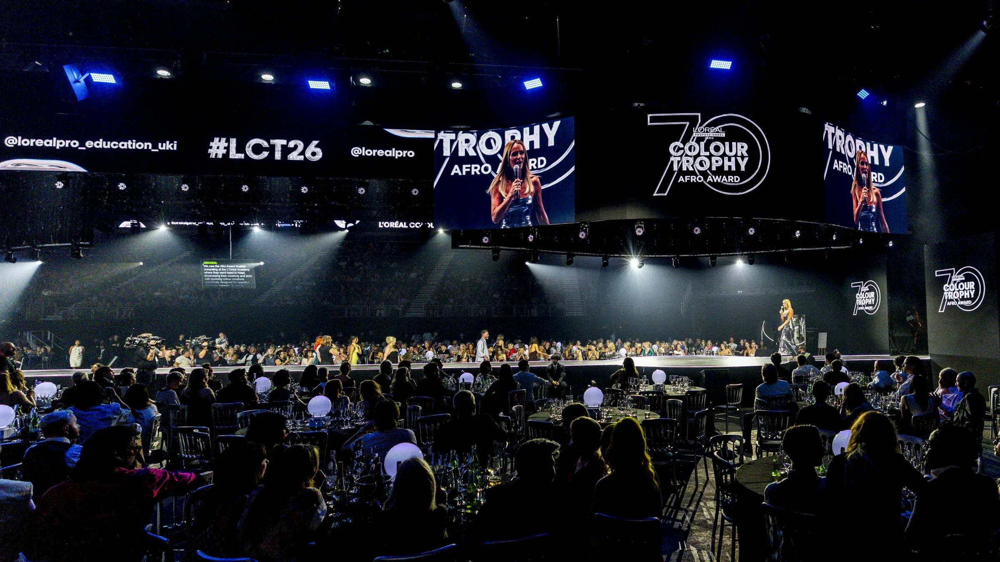
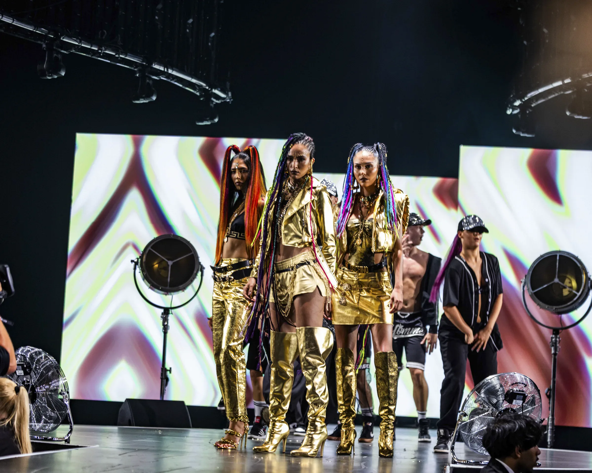
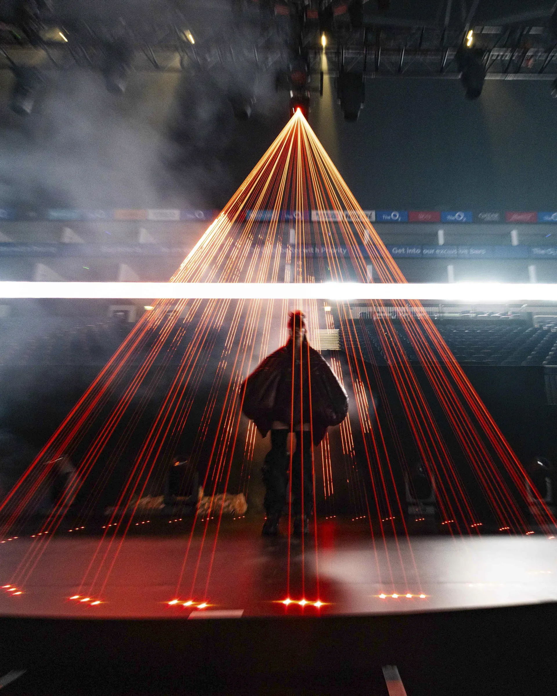

For the 70th anniversary of L’Oréal Colour Trophy, we developed two
distinctive final experiences in London and Dublin. Both were linked by
a single creative vision rooted in colour, creativity and the history of
the competition.
L’Oréal Colour Trophy 2026 marked the 70th anniversary of one of the
hair industry’s most prestigious competitions, recognising creativity,
innovation and excellence across the UK and Ireland.
Inspired by the Chroma theme, we created two experiences for the UK
Grand Final at The O2, London and the Ireland Final in Dublin. Each was
shaped around its venue, audience and technical environment, while both
remained connected to the same creative direction.
We worked closely with L’Oréal’s creative production teams and Encore
APAC’s Design Studio to develop an approach that could be adapted across
regions without losing the character of either event.
Creative production support
Experience and production planning
Technical production strategy
Cross-regional collaboration
Venue and technical feasibility planning
02
CREATE
Creative & content
Creativity takes centre stage.
Drag to explore ↔

A stage at the centre of the experience.

Colour, creativity and craftsmanship.

Lighting that shapes the moment.
London / The O2
UK Grand Final
For the UK Grand Final, the traditional competition format was
reimagined around an ambitious 50 m catwalk and 360 degree in-the-round
stage, placing finalists at the centre of the experience. Dynamic
lighting, video, lasers and special effects created an immersive setting
for the competition and its celebration of creativity and craftsmanship.
Dublin
Ireland Final
For the Ireland Final, a bespoke black gloss thrust stage brought models
further into the audience. Venue branding, a custom judging system and
an interactive foil selfie booth completed the experience.
Both productions followed the Chroma creative vision while reflecting
the character and practical requirements of their venues.
The scale and complexity of the productions required extensive
pre-production and technical coordination. At The O2, equipment was
prepared in advance, rigging requirements were optimised and the teams
worked closely with the venue to deliver the ambitious in-the-round
production within a demanding schedule.
Across London and Dublin, Encore combined creative design, technical
expertise and local venue knowledge to deliver two distinctive
productions for L’Oréal Colour Trophy’s Platinum anniversary.
Full technical production
Stage build
Lighting production
Audio production
Video production and content management
Rigging and infrastructure management
Technical production management
Venue coordination
The highlights
See the story in motion.
70 years of L’Oréal Colour Trophy. Experience the anniversary production.